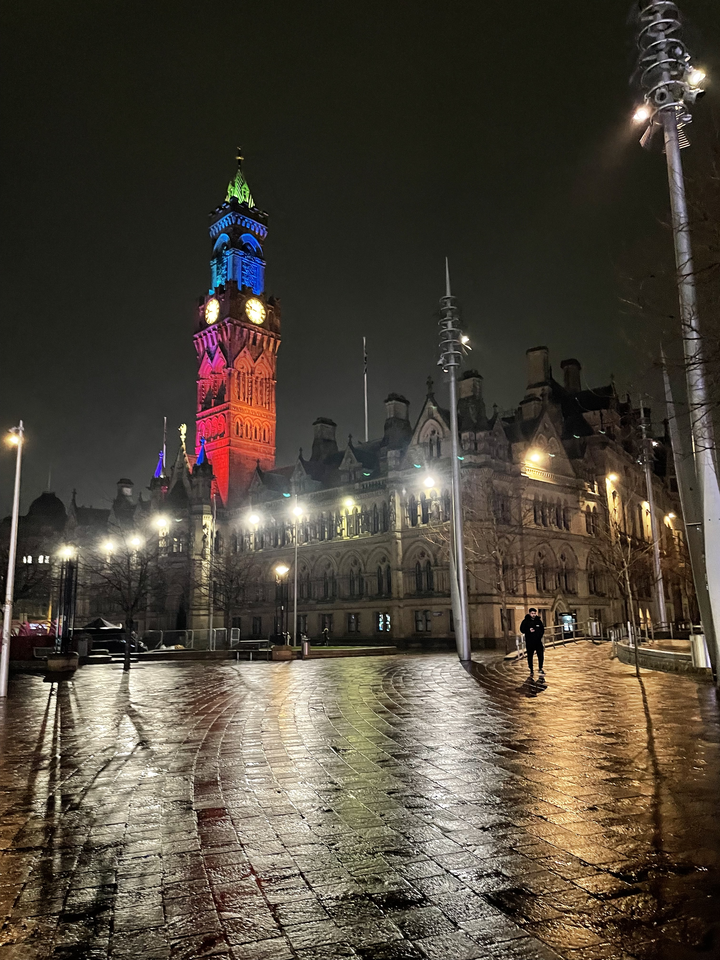
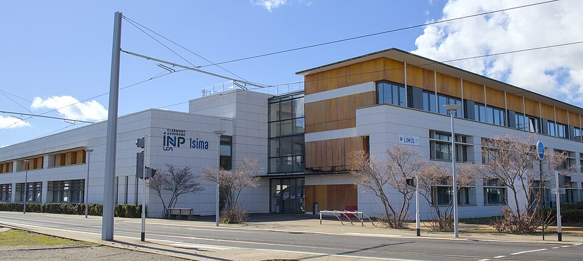
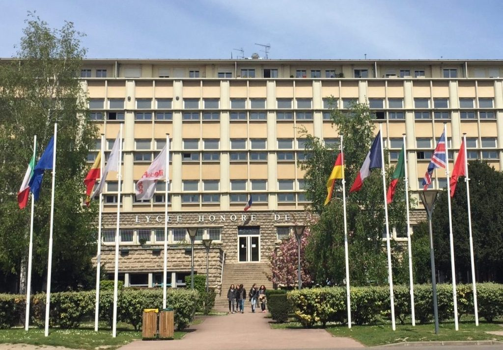

Cela comprenait des enseignements en Multi-Threading, Systèmes Conurrentiels et Distribués, UI/UX Design, ainsi qu'en Interprétation de Données.
Les langages associés ont principalement été JAVA avec ses modules Swing et Lockers, Python pour le calcul et les visualisations, et Weka pour la construction et la cartographie de réseaux de neuronnes.
J'ai notamment pu décrire le comportement global de la météo annuelle sur Mars, imiter le système de commande et service d'un restauraunt, implémenter un système d'authentification multi-facteurs et d'approuver quelques symptômes rétiniens du diabète.
Le campus étant traversé par un jeu de nationalités large, l'adaptation à la culture Anglaise fût agréable aux cotés de personnalités qui décrouvraient comme moi ce pays.
J'ai pu en profiter pour visister les villes voisines Leeds et Manchester ainsi que quelques parcs nationaux ! 🌳️


Cet environnement m'ouvrent aux domaines principaux de l'Informatique tout en restant ouvert et versatile sur ses domaines d'applications.
Je retiens particulèrement la Programmation Orientée Objet avec Java et C++, l'Algorithmique, le traitement et la classification d'images, les introdutions aux outils PLM et la théorie des langages.
J'ai pu en parallèle apprendre à me renseigner, à intérpreter des informations étrangères, et à balbutier d'autres domaines pas forcément compris dans ma formation comme le Développement Web Front-End
J'ai pu faire parti du système associatif et apprécié les quelques représentations que j'y ai mené.
ISIMA possède une ambiance unique que je ne retrouverai pas autre part.
Merci pour tout ! 🐭️
Le parcours PCSI/PC permets d'approfondir particulièrement la Physique en référentiel non-Galiléen, quelques notions de quantique et la Chimie Organique.
La forte densité du programme oblige un travail régulier, méthodique et soutenu qui m'a personnellement développé en adoucissant l'inquiétude et en améliorant ma prise de recul sur les situations que je vivais.
Je pense que la Classe Préparatoire amène à être réaliste et à se poser de meilleures questions. Je remercie tous les professeurs qui m'ont enseigné durant ces deux années car j'en garde un bon souvenir.
Cette formation m'a permis de concourir pour le groupe INP auquel je ferai parti par la suite.

De plus, ce travail fût apprécié par mes professeurs et mon jury, ce qui m'a conforté dans sa portée et son intérêt. Ce pourquoi je continue à en parler aujourd'hui.
L'objectif était de mesurer l'efficacité d'un système de stockage qui consomme la quantité d'énergie à stocker en soulevant une masse, puis en la restituant via la chute ce corps.
J'ai ensuite élaboré deux dispositifs éxpérimentaux reproduisant ce principe, et me suis penché sur la question du ralentissement de cette masse à des fins sécuritaires.
Si vous souhaitez plus d'information su ce projet :
À chaque nouvelle lecture à vue, avant de commencer une nouvelle pièce, je nomme chaque accord et logique déjà rencontrés que je reconnais. Au delà de l'évolution technique, faire cet effort permet selon moi de développer un nouveau rapport avec son instrument et de mieux comprendre comment un rythle est organisé.
Je maîtrise pour l'instant les triades et les accords de 7ème que je souhaite par la suite mieux utiliser afin d'accompagner des instruments et d'improviser.
Je joue principalement du Classicisme, du Romantisme, de l'Impressionnisme et des compositions actuelles dont Frédéric Chopin, Claude Debussy, Erik Satie, ou Toby Fox ;)
Je pense par la suite prendre des cours pour avoir un point de vue plus professionnel et rigoureux de l'instrument.